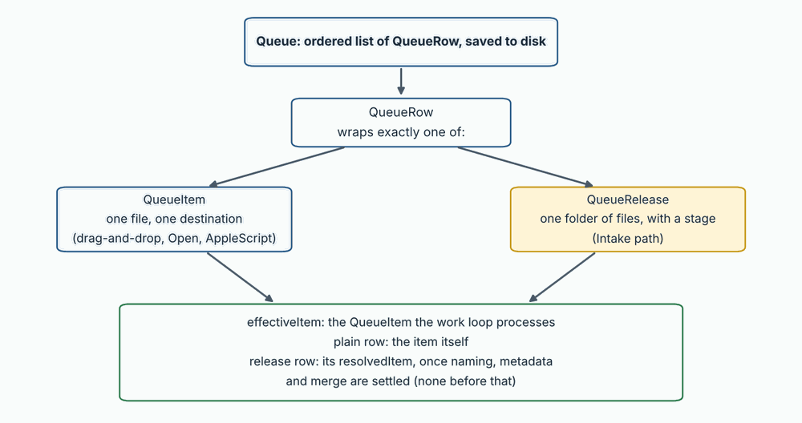
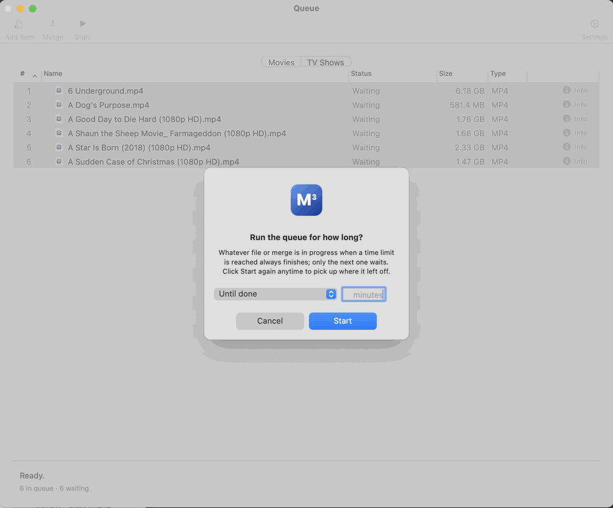
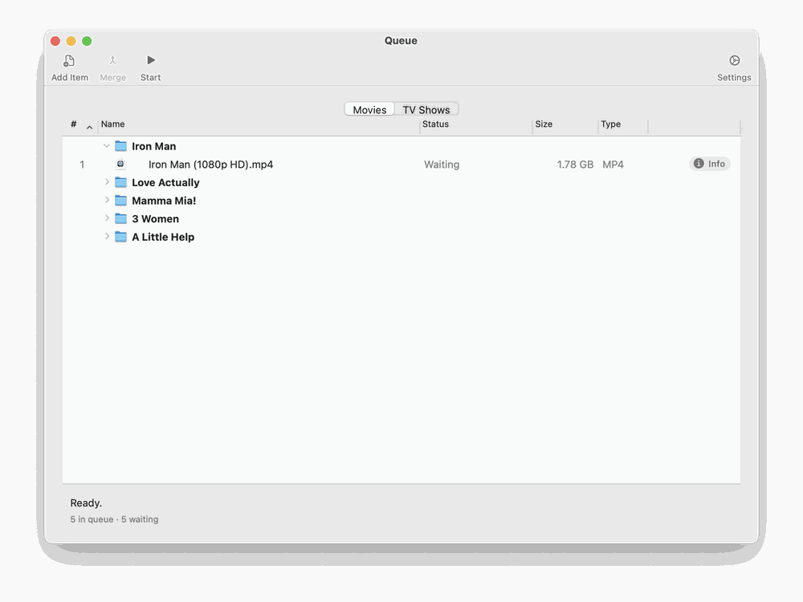
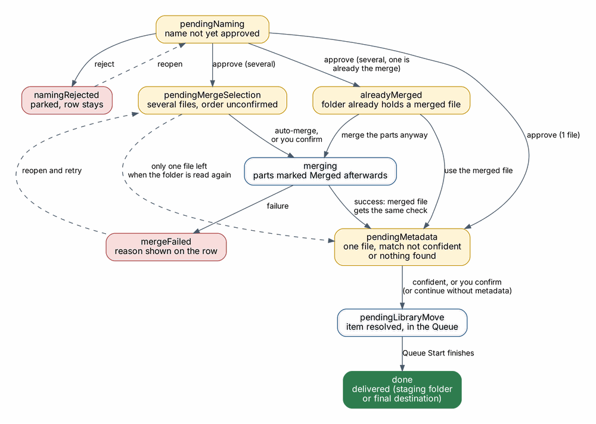

Choose Window → Show Movies Queue or Window → Show TV Shows Queue, or click Queue in the editor’s toolbar. They all open the same Queue window, which has a Movies tab and a TV Shows tab; the menu item you chose decides which tab is showing. Each tab keeps its own list, the toolbar acts on the tab that is showing, and the window remembers its position and the last tab you used across launches. A TV show added by Intake opens its tab automatically. The Dock badge shows the combined number of waiting items.

Toolbar. The default order, from the left, is Add Item, Merge, Start / Stop, flexible space, Settings.
| Button | Action |
|---|---|
| Add Item | Add files or folders to the Queue by hand. Files added this way become plain items. Files are put on the tab they belong on: TV episodes on the TV Shows tab, everything else on the Movies tab (see Handle TV episodes in section 6). |
| Merge | Enabled when two or more not-yet-processed items are selected. Opens the Merge Review sheet, then asks where to save the merged file. |
| Start / Stop | Run or pause the Queue. Start asks how long to run: Until done, or a number of minutes. The file or merge in progress when the limit is reached always finishes; only the next one waits, and clicking Start again picks up where it left off. |
| Settings | Show or hide the Queue Options panel (see 3.3). |
The toolbar’s display mode (icon, icon and text, or text only) also controls the Info and Edit buttons on each row and the progress display at the bottom of the window: with text shown, a percentage; with icons only, a progress bar.

Columns. Each tab lists Name, Status, Size and Type. Click a column header to sort by it (A to Z, with numbers in names sorted as numbers) and click again to reverse. Drag the edge of a header to make a column wider or narrower, and drag a header to move the column; # stays at the far left and the buttons at the far right. Tag columns from a Library scan sort too, with files that have no value first. Sorting changes the order the files are processed in, can be undone with Edit → Undo, and rows can still be dragged. Files added from a folder stay under their folder.
Folders. A folder that is still waiting to be named or merged has a disclosure triangle. Click it, or press the Right and Left arrow keys on the selected folder, to list the files inside; Option-click opens or closes every folder at once. The listed files are for looking at only. While a folder is being merged, each of its files shows Merging in the Status column with a percentage, and the progress bar and status line at the bottom follow the merge.

Rows. Each row shows a status icon and the name. On the right are two buttons:
Closing an editor window does not remove its row.
Row states for a release.

| State | Meaning | What to do |
|---|---|---|
| Waiting for naming | The folder was found; its name is not yet approved. | Double-click to open Naming Review. |
| Naming rejected | You rejected the suggested name. The row stays so nothing is lost. | Double-click to review again. |
| Waiting for metadata review | One file (or a merged file); the online match was not confident enough, or nothing was found. | Double-click to open Metadata Review. |
| Waiting for merge order | Several files; the order is not yet confirmed. | Double-click to open Merge Review. |
| Already merged: review | The folder already holds a merged file (one about as big as all the other files together), so M3 did not merge the parts again. | Double-click to use the merged file, or to merge the parts anyway (the existing merged file is kept and renamed with " - OLD" added). |
| Merging | The parts are being joined. | Wait; progress is shown on the row. |
| Merged | The parts of this folder have been merged; each part file shows Merged in the Status column. | Nothing; carry on with the merged file. |
| Merge failed | The parts could not be joined. The reason is shown in plain language. | Double-click, adjust the selection, retry. |
| Ready | A single file is ready to be written. | Click Start. |
| Done | The release has been delivered: to the staging folder, or with automatic delivery on, to its final destination. | Remove it with Remove completed items, or turn on Remove finished items from the Queue automatically. |
Context menu. Right-click a row for Reveal in Finder, Edit…, Remove from queue and Remove completed items. You can also drag rows to change their order, and drop files or folders from Finder into the window. A dropped folder is grouped under its own folder row, exactly as with the Add button; a show folder that holds Season folders gets one group per Season folder. A dropped file is added as a single row. Episodes and movies are put on the tab they belong on, in the same way as with Add.